01 / Environment
Apple Interaction
A woodland meadow where players freely throw and catch apples with an NPC squirrel whose mood-driven finite state machine controls its behaviour, such as offering, chasing and evading, and its expressions.
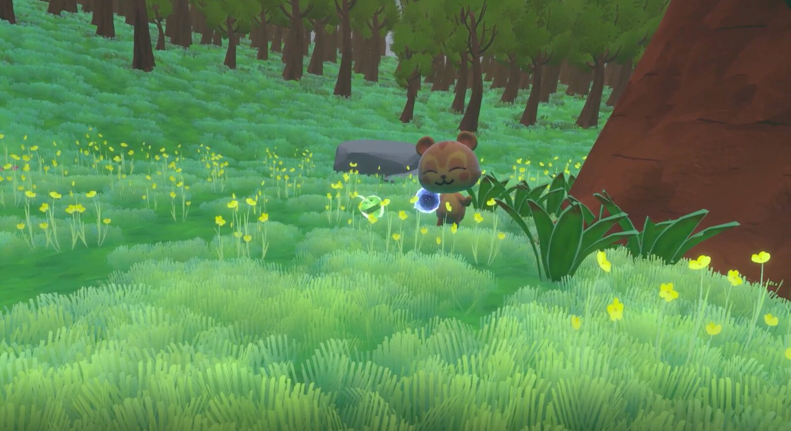
Start with the interaction
Apple Interaction is a virtual reality environment set in a circular woodland meadow, with a single large tree at its centre and a squirrel non-playable character (NPC) as the participant's counterpart. It was designed to elicit PLAY. Accordingly, it contains no score, visible timer, or explicit objective, and each session lasts 7.5 minutes.
The interaction centres on throwing and catching apples. Apples rest on the ground and grow on the tree, and the participant can pick them up and throw them to the squirrel. The squirrel monitors the participant's position and the trajectory of thrown apples, and responds by chasing and catching them, offering an apple to the participant, dodging a throw, evading in a keep-away pattern, or climbing the tree to drop an apple from above. Either party can initiate an exchange, producing a reciprocal sequence of turns.
The environment is intended to make this kind of interaction feel natural without imposed rules. It combines an open, daylit setting with a responsive and expressive squirrel, so that play can arise from the interaction itself.
What happens in this world
The squirrel
The squirrel is a navigation-mesh agent controlled by a finite state machine, in which it occupies one behaviour at a time (for example idling, offering an apple, chasing, or climbing) and transitions between behaviours in response to events. A lightweight mood model tracks two variables, playfulness and tiredness, which scale its movement speed and bias its choice of behaviour over the course of a session. This mood model is the only adaptive logic in the environment; there is no difficulty adjustment or scoring.
The squirrel's sensors register the participant's distance and idleness, together with the trajectory and force of thrown apples. Its responses to being thrown at include catching, dodging, a startle, a playful trip, and a taunt, and its catch animation varies with the height and side from which an apple arrives. Its facial expressions are hand-drawn textures that change with mood, gaze direction, and blinking, and the pitch and volume of its vocalisations vary with its mood state.
The meadow and the player's actions
The scene is a circular woodland meadow centred on a large tree. Up to five loose apples rest on the ground and respawn at fixed points when fewer than three remain; further apples grow on the tree and become throwable when grabbed. Apples use a custom shader with a star-shaped sparkle effect and are available in several colours, and the grass uses a separate custom shader. The participant moves using short comfort hops in the direction of gaze, and grabs and throws objects with the controller trigger.
Design rationale
An animal NPC was chosen deliberately. Prior work on virtual companions indicates that a stylised, non-human character supports social presence and positive affect more effectively than a realistic human avatar, and studies of virtual pets report that responsive animals, including ones that bring objects to the user, help to initiate and sustain engagement. A stylised animal also avoids the uncanny valley, the unease that near-realistic, humanlike characters can provoke when they are almost, but not quite, convincing. The squirrel was therefore given a deliberately cute, stylised appearance, to encourage approach and rapport without that risk. Its mood-dependent facial expressions and vocalisations serve as social cues, since expressive behaviour, gaze, and vocal intonation are known to make virtual agents more believable. Soft, rounded textures were chosen because they have been associated with warmth and joy.
The remaining sensory choices follow similar evidence. Natural, open, daylit environments have been linked to more positive affect than urban ones, bright colours are associated with joy, and faster-tempo music is generally judged to be happier, so a moderately fast musical loop and ambient outdoor sound were used. Locomotion uses short hops to reduce the risk of cybersickness. No goal is imposed, in keeping with the autotelic nature of play.
Gallery
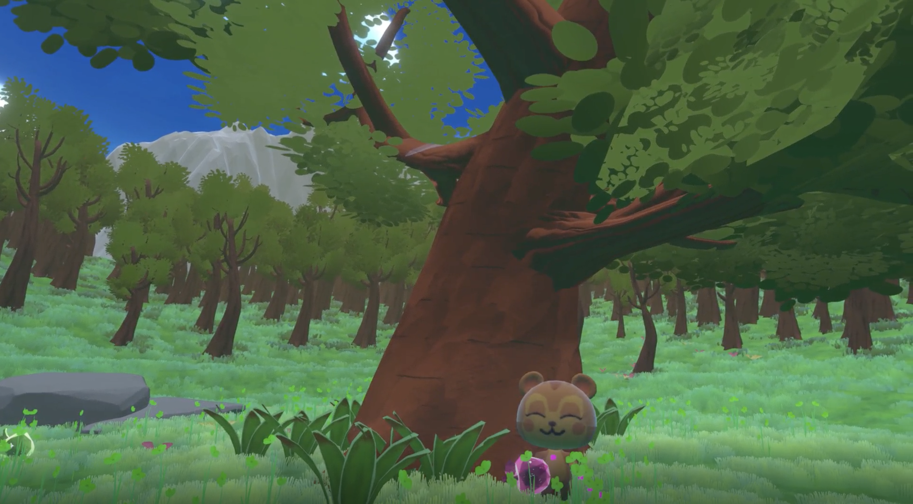
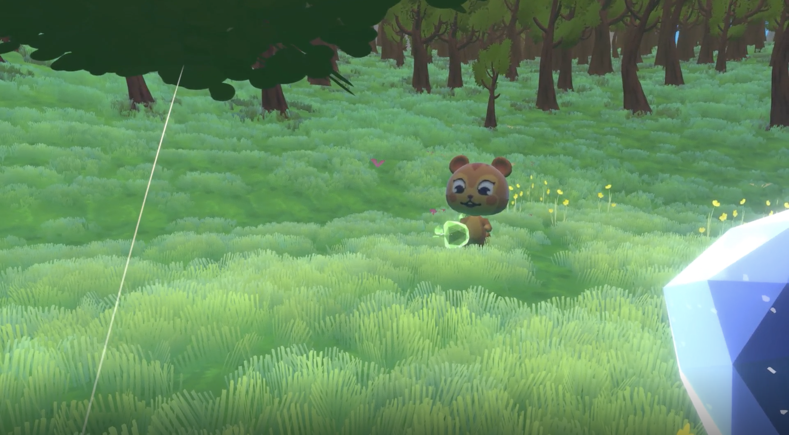
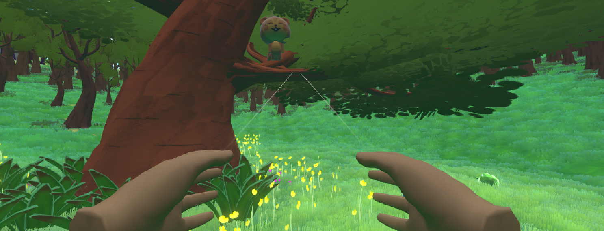
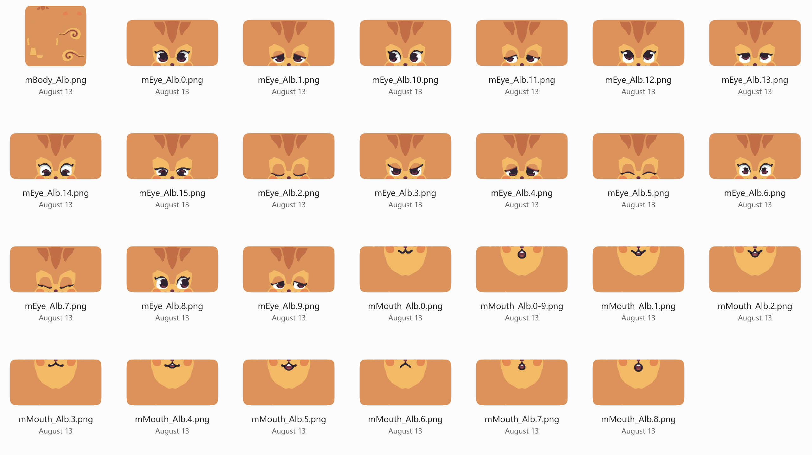
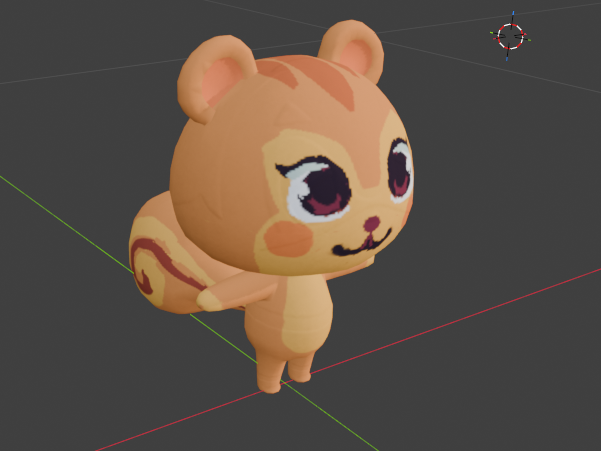
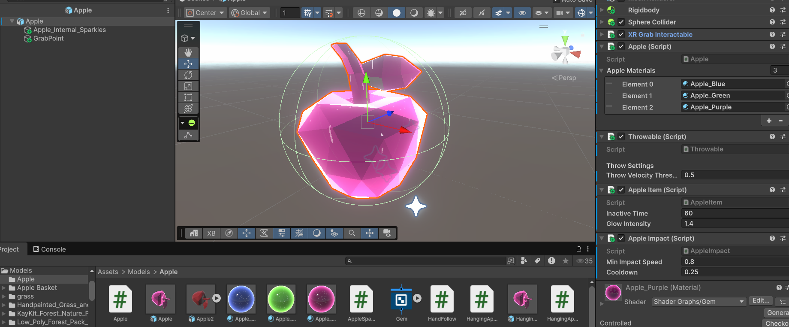
How it was tested
The procedure shared by all three environments is described on the Method page. For Apple Interaction, 25 participants took part in a within-subjects design with three measurement points: P1 before any VR exposure, P2 after the neutral tutorial scene, and P3 after the Apple Interaction environment. The Self-Assessment Manikin (SAM), PANAS-X and the Affective Neuroscience State Scales (ANSS) were completed at all three points. Presence (iPQ) was measured at P2 and P3, co-presence and social presence at P3 only, and behavioural telemetry was logged throughout the session.
Each part of the definition of PLAY was mapped to a measure. Valence, arousal and dominance were measured with SAM, joy with the PANAS-X Joviality subscale, and PLAY itself with the ANSS PLAY subscale. Sociality was measured with co-presence and social presence, and reciprocity with the proportion of apple-related interactions initiated by the participant.
For each measure with three readings, an omnibus test (repeated-measures ANOVA or Friedman test) was run first, and Holm-Bonferroni-corrected pairwise comparisons were made only where the omnibus test was significant. SAM scores at P3 were tested against a threshold at the upper third of the scale. Joviality and ANSS PLAY were each compared with the next-highest subscale, and behavioural indicators were correlated with ANSS PLAY ratings. Interaction frequency was compared across four two-minute blocks of the session with a Friedman test.
What this experiment showed
2 of 7 parts met
- Valence (partly met)
- Arousal (partly met)
- Dominance (not met)
- Reciprocity (met)
- Sociality (not met)
- Joy (partly met)
- PLAY (met)
Filled: met. Half: partly met. Empty: not met.
Twenty-five participants completed self-report measures at three points: before any VR exposure, after a short neutral VR scene, and after the meadow. Each component of PLAY was tested against either a predefined threshold or the pre-VR baseline.
Met. PLAY was the highest-rated subscale on the Affective Neuroscience State Scales, exceeding its closest competitor, SEEKING (M = 19.88 vs. 18.80, p = .017), and it increased significantly across the three points (p < .001). Reciprocity was also met. On average, 62.4% of interactions were initiated by the participant, and the proportion initiated by the participant was positively correlated with PLAY ratings (Spearman's ρ = .52, p = .008). This correlation was robust to leave-one-out analysis and to the removal of outliers. Interaction frequency did not decline across the session (p = .449).
Partly met. Valence exceeded the threshold for "high" (Mdn = 8, p < .001) and increased from M = 7.16 before VR to M = 8.08 after the meadow. Arousal increased from M = 4.42 to M = 6.18 but did not exceed the "high" threshold (Mdn = 7, p = .363). Joviality increased from M = 3.33 to M = 4.02, but was not significantly higher than surprise (M = 4.02 vs. 3.72, p = .079).
Not met. Dominance exceeded the threshold (Mdn = 7, p = .023) but did not change significantly across the three points (p = .101). For sociality, co-presence was significantly above the scale midpoint (M = 3.64, midpoint = 3, p < .001), whereas social presence was not (M = 3.87, midpoint = 4, p = .691).
Most of the increase in positive affect was already evident after the neutral scene, indicating that much of it reflected being in VR generally rather than the meadow specifically. Surprise was the only measure to increase significantly between the neutral scene and the meadow (pHolm = .021). The environment therefore produced positive, engaged experiences and a clear PLAY signal, but these results do not allow the effect to be attributed to the design alone. The proportion of interactions initiated by the participant, rather than their total number, was the behavioural measure most closely associated with PLAY. The sample (N = 25) was smaller than the planned target of 30, so the results should be read as partial evidence.
Outcome of every test
| Test | p | Outcome |
|---|---|---|
| SAM valence at P3 above threshold | < .001 | Supported |
| SAM arousal at P3 above threshold | .363 | Not supported |
| SAM dominance at P3 above threshold | .023 | Supported |
| SAM valence changed across the three readings | < .001 | Supported |
| SAM arousal changed across the three readings | < .001 | Supported |
| SAM dominance changed across the three readings | .101 | Not supported |
| Joviality changed across the three readings | < .001 | Supported |
| Joviality was the highest PANAS-X subscale at P3 (vs. surprise) | .079 | Not supported |
| ANSS PLAY changed across the three readings | < .001 | Supported |
| ANSS PLAY was the highest ANSS subscale at P3 (vs. SEEKING) | .017 | Supported |
| Presence above zero (iPQ neutral point) | < .001 | Supported |
| Presence rose from P2 to P3 | .108 | Not supported |
| Co-presence above the midpoint | < .001 | Supported |
| Social presence above the midpoint | .691 | Not supported |
| Participant-initiated interactions correlate with PLAY ratings | .008 | Supported |
| The other five behavioural indicators correlate with PLAY ratings | > .17 | Not supported |
| Interaction frequency changed across the session | .449 | No change (no decline) |
Omnibus tests were run across the three readings, with Holm-Bonferroni correction for pairwise comparisons. Tests of presence, social presence and behavioural indicators are secondary and uncorrected. Full test statistics are in the final paper.
Charts
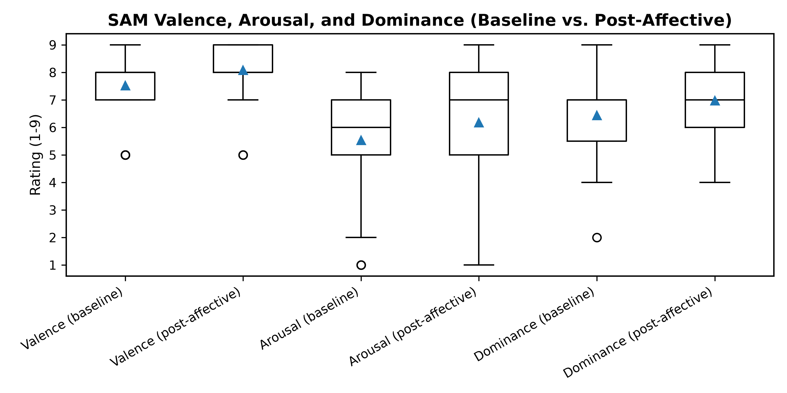
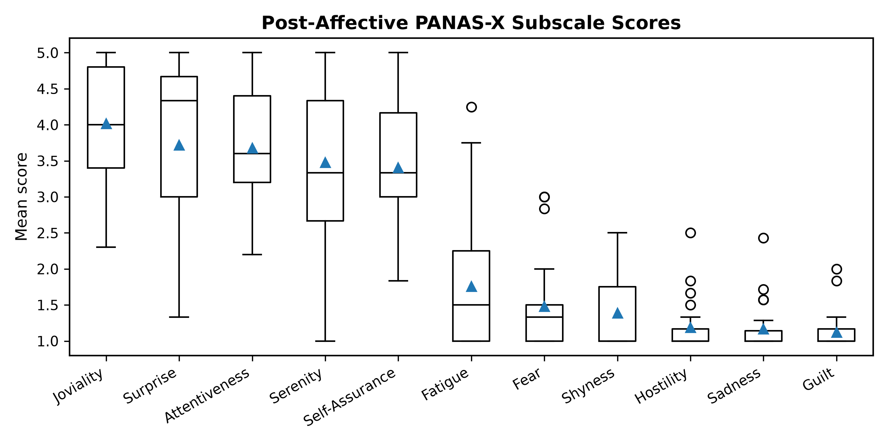
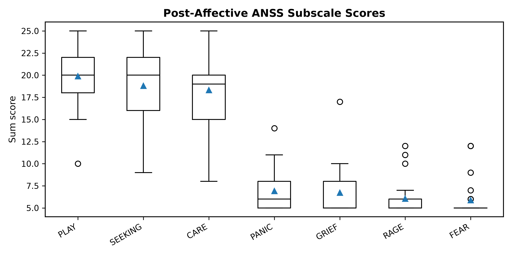
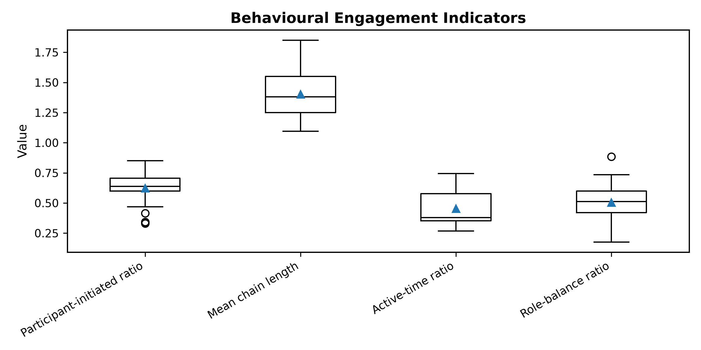
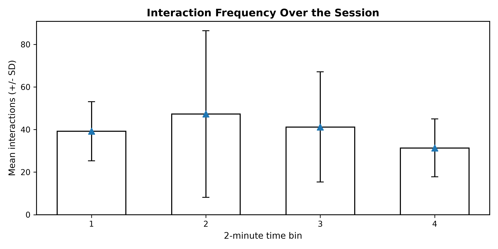
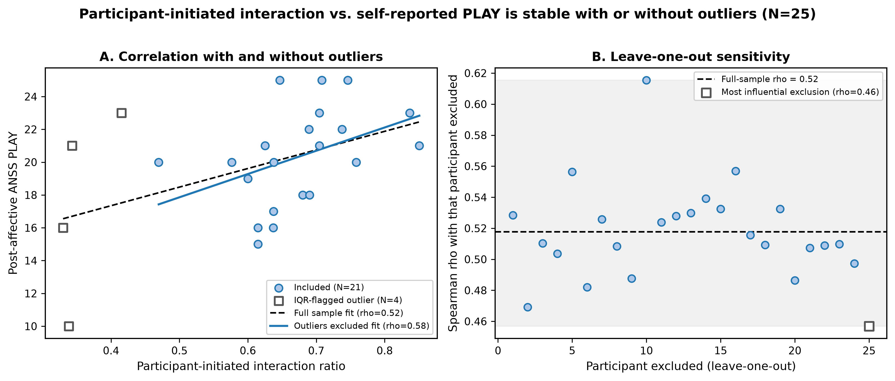
What it means
Most of the rise in valence, arousal and joviality was already visible between the first and second readings, before the meadow. Surprise was the only measure to rise further from the tutorial to the meadow, which may partly reflect the novelty of VR. Dominance did not change reliably, whereas the proportion of participant-initiated interactions tracked PLAY. Behavioural initiative and self-reported dominance may therefore capture related aspects of agency, with different reliability.
Informal notes from the sessions suggest some candidate explanations for the weaker results. These were not collected systematically and should not be read as findings. Participants tried to grab apples out of the squirrel's hand and to climb the tree. The squirrel sometimes threw from very close range, could not hold a second apple, and did not dodge.
These observations suggest four changes: a proximity-based grab, more consistent tree climbing, a reaction from the squirrel when it is hit, and more than one squirrel. A non-playful squirrel encounter in the tutorial would also provide a baseline for co-presence. The evidence is partial, from 25 participants against a target of 30, and a comparison across the three environments is needed.
Keep exploring the project
| Document | Format |
|---|---|
| Final paper: Using Virtual Reality to Elicit the PLAY Emotion: Design and Evaluation of an Apple Interaction Environment | |
| Literature review: The Elicitation of PLAY in Virtual Reality |
Source code
AppleInteraction_source.zip (182 KB): C# scripts, the Unity project settings, and the package manifest.
Each archive holds the C# scripts, the Unity project settings and the package manifest, which is enough to read the code and see which Unity version and packages it was built with. Models, textures, audio and other third-party assets are left out to keep the archive small.